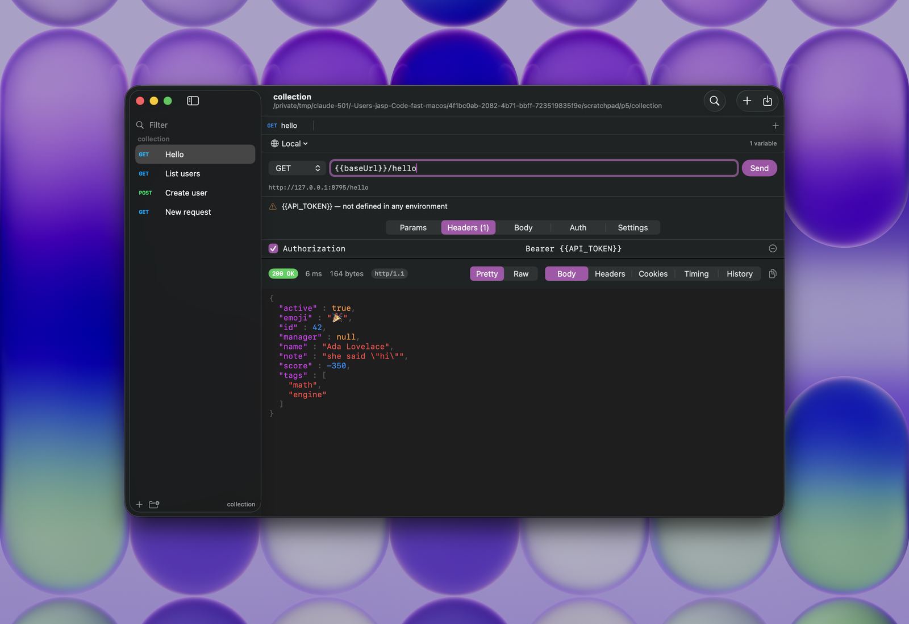

Native macOS API client
A small, native API client for macOS. No Electron, no account, no telemetry.

Everything here is in the first release, and everything that is missing is missing on purpose.
Every request is one JSON file in a folder you pick. Bodies sit in their own files next to them, so a diff is something you can actually read.
Drag in a collection, an environment file, or the whole data-dump zip. Collection formats v2.1 and v2.0 both work.
Point {{baseUrl}} at localhost or at staging without touching the request. Anything you mark secret goes to the Keychain rather than into your files.
Paste a command copied from Chrome, Firefox or Windows cmd and it becomes a request. Copy one back out when you need to share it, with the credentials stripped if you prefer.
Highlighted JSON, headers, cookies, the redirect chain, and a timing breakdown taken from real URLSession metrics rather than a stopwatch.
Every action has a shortcut, and every shortcut is also a menu item so you can find it. ⌘K jumps to any request in the collection.
These numbers were measured on one machine against Postman 12.22.3 for Apple silicon, downloaded from postman.com. Where we could not measure something, the row says so rather than guessing.
| Nib | Postman 12.22.3 | |
|---|---|---|
| On disk | 1.6 MB | 353 MB, of which 213 MB is Electron |
| Download | 1.6 MB | 145 MB |
| Built with | AppKit and SwiftUI | Electron, embedding Chromium 138 |
| Dependencies | None | A bundled browser, at minimum |
| Idle memory | 30 MB | Not measured† |
| Account required | No | Yes, for most of it |
| Telemetry | None | Yes |
| Requests stored as | Plain files you own | A synced workspace |
| Licence | AGPL-3.0 | Proprietary |
† Postman quit immediately every time we launched it on the machine we tested on, so we have no memory figure we are prepared to print. The rest of the numbers come from the downloaded bundle itself: du on the installed app, and the Chromium build string inside its Electron framework.
Nib does not run scripts. It keeps them in your files, round-trips them untouched, and tells you which requests contain them, so nothing disappears quietly during an import.
All four are measured on the build that ships and checked again on every pull request, so if one of them stops being true the build fails that day.
brew install nib-app/tap/nib
That is the whole thing. The tap clears the quarantine flag while it installs, so Nib opens normally afterwards.
Without Homebrew, download the zip from GitHub and drag Nib into Applications. macOS will block it the first time, because Nib is signed but not notarized by Apple. Either run xattr -dr com.apple.quarantine /Applications/Nib.app once, or open System Settings, then Privacy & Security, where macOS offers an "Open Anyway" button for the app it just blocked. Notarizing would remove that step for everyone; it costs $99 a year and will happen if the project earns it.
Nib asks for no system permissions at all. There is no Accessibility prompt, no Input Monitoring prompt and no Screen Recording prompt, because none of them are needed.